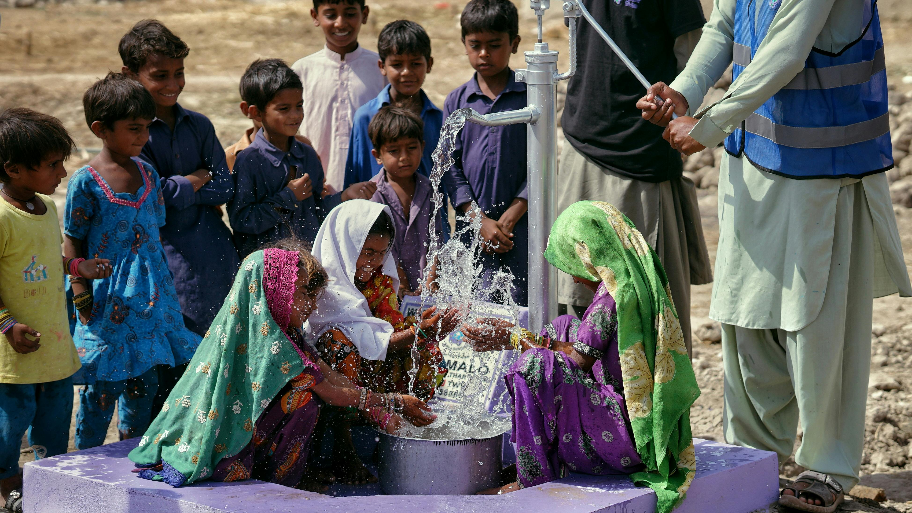

Om oss
Har du reflekterat över att den tid det tar att läsa detta stycke motsvarar den tid som krävs för att resa sig från soffan, gå till köket och fylla ett glas med rent vatten?
I många höginkomstländer betraktas tillgång till vatten som en självklarhet, men i ett globalt perspektiv utgör denna tillgång ett privilegium som långt ifrån alla människor har. Tillgång till vatten som en central förutsättning för den biologiska mångfalden och en hållbar utveckling (Globala målen, 2024). 844 miljoner människor saknar grundläggande källa till dricksvatten och 2,3 miljarder har bristfälliga sanitära faciliteter såsom latriner (Unicef, u.å.).
Brist på grundläggande vatten och sanitet leder till allvarliga konsekvenser, såsom ökad ojämlikhet, hindrad ekonomisk utveckling, förhöjda konflikter, samt hälsoproblem såsom diarrésjukdomar och kolera (Sida, 2023). Särskilt utsatta är människor som lever i låginkomstländer och övervägande andel som drabbas är kvinnor och flickor som ansvarar för familjers vattenförsörjning (Globala målen, 2024).